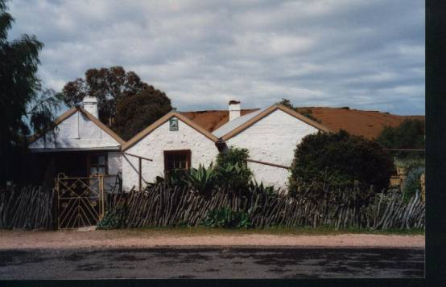
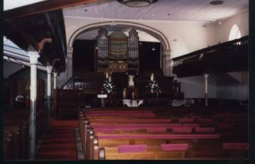
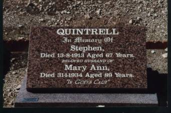
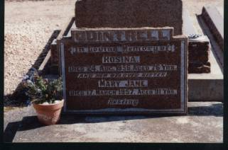
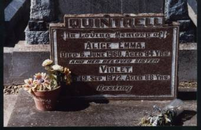

A miners' cottage at Moonta Mines (now a restored
dwelling and a National Trust building) which is typical of the cottage
the Quintrell family lived in from the 1860s until its demolition in
1970.
A transcription of the memoirs of my paternal
grandfather
Stephen William Quintrell (1871-1960).
Transcription notes:
There are two different versions and a brief fragment
covering slightly different episodes. With minor exceptions (shown in
square brackets) the following is a direct transcription of Stephen
William's handwritten memoir. Place names and personal names are
transcribed directly.
Biographical note:
Stephen William Quintrell was the fifth of
thirteen children born to Stephen senior and
Mary Ann Datson. Stephen snr (aged 8 years) arrived at Port Adelaide on 11
Sept 1858 on the 'General Hewett' with his parents John and Mary (nee
Toy). He was the fourth of five children.
Mary Ann Datson's parents (Hugh and Jane) arrived at Port Adelaide on
the 'Aboukir' on 4 Sept 1847. Mary Ann would have been 3 years old, having
been born in Cornwall in 1844. Stephen snr and Mary Ann married at the
Wesleyan chapel, Moonta SA on 2 Sep 1865.
'Version 1'
I was born at Moonta Mines on the 5th of
July 1871. My father was born at Liscard, Cornwall, and mother at Redruth,
Penzance, England so, by that, as a friend said to me once when asking
what Nationality I was, parents both from Cornwall and myself Moonta
Mines, that I was a pure Cornishman. I went to school at an early age to
the Mines Model School and was one of the first scholars when it opened
under Headmaster Dr W. G. Torr. Moonta Mines at that period was at its
best. My father was a Surveyor Draughtsman under Mr H R Hancock. We
shifted to Adelaide in 1881 and I went to the Tynte St [School] under Mr
Gill. In 1885, I entered the Government Service in the Water Conservation
Department under J. W. Jones, Conservator. While there I worked in the
office in the new Government Building, Victoria Square. After 18 months at
2/6, and never cared for indoor work, I went into the field with the
Surveyor, and my first job, I was sent away north to Yadlamalka, north
from Port Augusta under W. W. Mills, surveying along the west side of the
Flinders Range towards Warrakimbo, Marachowie and Mt Eyre which was a
deserted township used in the old [illegible].
On completion there, we came back and travelled through
the Pichi Ritchi Pass to the east side of the range to Quorn, then on to
the Te Tee Va Springs at the mouth of Depot Ck, where we made our camp,
then worked along the range towards Mt Ragless and Ardenvale. Depot Creek
Gorge runs through the Range from the east to the west side. While there I
climbed to the top of Mt Arden and repaired the Trig. On top of Mt Arden
you get a glorious view. Looking towards the west you can see the Tent
Hills onning(?), Lake Torrens to the south, Mt Brown to the north across
the saltbush plains as far as Mt Desolation, and to the east Mt Ragless
and the Willochra Plains. It's worth the climb for the view.
On completion of our work there, we came back and
travelled north past Hawker and Hooking to the Moralina Creek at the mouth
of Wilpena Pound. One thing I remember while at the Depot Creek camp: we
went to a party at Ardenvale township – nearly all German settlers and I
had my first experience of a German bed, a feather bed and [illegible].
From Moralina we worked along the old survey line and then on to
Parachilna, and pitched our camp at the well at the mouth of the Oratunga
Gorge, and through the pass to Blinman. At Parachilna, the hotel was kept
by Bill Darmody, and the Blinman Hotel by Remington Barnes of Shootover
fame – Adelaide Birthday cup 1888.
We worked along the Breakfastime to Wilpena and
surroundings. At the Oratunga, I met up with Bob Caldwell afterwards. The
next time I met Bob was when he was Resident Engineer for the Railways.
After finishing our work there, we called to Adelaide camp and horses. We
came back through Hawker, Craddock, Hanawerie(?), Terrowie, Burra, Kapunda
to the Survey yards, Thebarton and disbanded. My camp mates were Surveyor
W. W. Mills; Jack Fotheringham and myself, chainmen; Sam Moore, axeman; H
Edeina (?), teamster; and Newt Gregory, cook.
1885 to 1888.
My next job was with was with Surveyor J. S. Furner,
surveying and leveling from Woodside through Lobethal, Cudlee Creek and
Millbrook, also [illegible]. Then I was at B. Hill until the 1892
Strike started and then we were all scattered to different stations. I was
lucky, being sent to the SouthEast, and was not sorry as the Typhoid Fever
was prevalent. Silverton and B Hill hospitals were full.
South East: I started in the South East at Naracoorte
and it was a great contrast to the dry north. It was winter time and
[with] the rains and the water laying about, it seemed a different
countree (sic). Superintendent was C. F. Girback and afterwards, W.
Miller; leading fitters Curly Howbel(?), Tom Kingdon; Henry Gens was
apprentice - afterwards Mine Host of Gens Hotel, Mt Gambier; Steve
Staunton, blacksmith; H. S. Hamilton; clerk and P. Prince. Afterwards I
was sent to Bordertown where I had the misfortune, on turning the engine
on the turntable, to get my left foot crushed and opened badly. Bob
Stephenson was the driver and I was off for several months. On resuming
work at Naracoorte on the roads to Kingston, Mt Gambier to Bordertown, 3rd
rail for narrow gauge … [illegible] … to Bordertown and Mt Gambier
and Beachport with different enginemen; Jack Eager, W Cornell, P Crafter,
Jack Smith, Amby (?) Snell, Jim Mackie, Amos Clark.
In 1894, I got married to my dear wife, Edith Long in
the Wesleyan Church by the Nara Creek, and was transferred to Kingston to
fire for Charlie Hall, Kingston and Naracoorte line. I was 7 years at
Kingston with Charlie and I enjoyed every day of it there. Most of the
latter years we were working 3 days a week, except in the wool season.
Sport, cricket and football, of which I was the captain, and foot racing.
There was plenty of fast runners, good Sheffield runners in J McKinnon,
Pinkerton's son Martin, Tapfield of Black Ford, Charley Threadgold of
Murray Bend. While I was there I had the knowledge of what a real
earthquake was like, an experience of which I'll never forget. It was
supposed to be a Marine Volcano at sea off Cape Jaffa erupting, and for
several months, the shakes continued. I had to go 3 days a week on a trip
up to Naracoorte and you could hear the rumble of the shakes coming from
Cape Jaffa and feel the shake passing the old galvanised shed, and the
iron girders shaking and rattling and rumbling north towards Murrabinna
way, making you feel very queer until you got used to it. In 1894 Roy was
born, during the earthquake season.
After years at Kingston, I got rated as a fireman at
eight shillings per day, and while there Ralph was born in 1898 and Norman
in 1902. While there I had my first trip in charge of an engine –
Naracoorte and Wolsley and back, Bert Rumball as fireman. After a time, I
was transferred to Mt Gambier, and this time it was disastrous for
Depression set in and 18 enginemen and 18 firemen were reduced in rank. I
was one of the unlucky ones. I was reduced from 8 shillings a day to 6/6
but the irony of it was, although I was reduced in status, I was still
doing the same work, but at reduced pay and it rankled. [From] Mt Gambier
we ran trains to Beachport and Wolsley. While at Mt Gambier, Edie and I
saw the opening of the tower at the top of the Mount overlooking the
Valley Lake – a good view from the top of the mount looking south to Port
McDonnell, where Edie was born, and Mt Shank, another extinct volcano. We
lived at Whel St, Mt Gambier. Mt Gambier is a very pretty place, but wet
in the winter, but the water does not lay about owing to the hollow
ground. Gambier [people] are proud of their lakes – Blue Lake, Leg of
Mutton Lake and Valley Lake. During the wet season, with Roy with the
croup and Norman also, Mt Gambier weather was detrimental to the health of
Norman's health (sic). The doctor advised us it [was] best to go north to
a drier climate, so I got a transfer to Pt Pirie. There I started on the
BHP Shunter with Shunt Engineman A. H. Bevell. I was not long in Pirie
before I got reinstated as a fireman at 9 shillings a day. Pirie did not
seem an advantage for a while. There is no beauty about it but …
[illegible]… plenty of life and splendid people and the friends we
made there remained friends, although, sad to say, the only ones remaining
is dear Mrs Daly and family.
We had a bad start when we arrived in Pt Pirie as
Norman took very ill and it was tough … [illegible]… with him we
had to keep him in cotton wool most of the time he was ill. While at
Pirie, my brothers Clarrie, Jack and Dick came there to work, and stopped
with us. At Pirie there was a fine lot of fellows to work with; most of
them are dead now – mates on the road. I fired for Jack Coulson, J.B.
Shrives, Alf Holthouse, W Alderson, Drivers; Tommy Hart(?), C. Job, Tom
Brennan, Jack McFarlane, Jack Mackie and a lot of others. While at Pt
Pirie I was borrowed by the Marine Board for a time to relieve their
engineer, taking charge of their engines to work on the long jetty. They
had 2 small engines, a SAR Narrow Gauge V, and a Kitson pump engine. I was
sent as I had experience [with] a Tange pump engine on the diamond
drilling. My work was to load the Celtic Queen sailing ship with wheat.
There was one mishap. I started with the V as I thought she could pull the
heaviest load. I worked the V for one day and on lighting her after
getting steam, I was filling her tank with water when the corner of the
firebox blew out. I was not long getting the fire out. The engine shed was
on the jetty. I sent word to Pt Pirie about the mishap, and Mr Hill,
Superintendent came. He took the coal pick and went underneath. He found
that he could punch holes all around the foundation of the firebox as she
was eaten all round. He told the Harbourmaster they did send a man over a
man (sic) to work taking such risk and without an examination.
Pt Pirie is a lively place. When I first [got there] I
got out at Pirie South and walked down Ellen St. The trains – passenger
and shunt – ran the length [of the main street]. The mineral trains from
Broken Hill ran down the street to the smelting works, pushing the trucks
ahead, with a porter ringing a bell. When a Yankee engine No 48 ran the
ore up to a bin and the refinery, I don't think any city anywhere else is
like that. Also, Ellen St [has] one side shops and pubs and the other
wharf, ships, big timber stacks. The train left Pirie every day for
Petersburg, Jamestown, and Gladstone to Hamley Bridge.
I was in one accident while we were there, when coming
into Petersburg Station and the signals showing 'all clear', we crashed
into 'Big Ben', a T Class engine which had stopped at the points
controlling the main line and the railway yards line. I was firing a Y
class engine of a mixed train with my mate Alf Holthouse. We caught Big
Ben in the centre. Our engine, a Beyer and Plack English-built (and what
splendid iron and steel was put into her!), she put the big engine over on
her side and cut her rods cylinder - cut them off like cutting through
cheese – and our engine fell over and buckled up. I did not remember much
as I was unconscious, and the tender and coal covered me until they could
release me. I suffered with bruised ribs and body, and shock, and [was]
sent back to Pirie to be doctored by Dr Hampton-Carr. I was off for a
while, and on my return to work I started with J Coulson on a Race Train
for Balaklava, and started when Coulson sang out 'Look out!'. They had the
points set for the loco and we crashed into the dead engines in the loco
shed. I got another shock and I left the engine and walked home.
In 1911, I was made a 3rd class fireman and
was transferred to Petersburg, and started once more on the Cockburn
roads. I was not long at Petersburg before I got another accident. I ran a
Class Y, just off the stocks, for a trial trip to Belalie and was on the
pit at Loco when the Chargeman, Alf Stevens, ran out to tell me 10 big
trucks had got away from the shunting yard and were running down the grade
to the Loco. I was alone on the engine. I ran with the engine to meet them
so to prevent them running into the running sheds there were fitters and
cleaners underneath them. I saw them coming fast and reversed to run with
them and then reversed until they were just on me, and started steaming
against the funnel. I opened the regulator and started steaming against
them until we reached the running shed. We gave the engine in the shed a
broken … [illegible] … but no one got hurt. Damage – a few trucks.
Just before this happened, some trucks broke away from
a train at Natabibbi, and the guard jumped into a big truck and put the
hand brake on and stopped them. He got a bonus of 50 pounds. S Kidman the
big cattleman happened to be riding passenger with him. J C Sharpe, the
foreman, came to me and said "Well, Mr Man, Jimmy Keane got 50 pounds the
other day for his job of stopping 3 trucks, so I expect a bottle of
Champagne when you get yours. I said, "Righto!". A few days [later] he
called me into the office. "here's a letter for you from the
Commissioner's office. They said no champagne for your action, although
it's a very nice compliment to you." I got on parchment telling me that
the action I took to stop the running truck prevented great damage to the
engine and the engines standing in the shed, and the injuries for them
working was extremely praiseworthy, and would be put on my record. No 50
quid. I have the commendation still, but I'd sooner have the 50 quid!
Worked on the Cockburn from 1911 to 1916. In 1914, the
World War started. By the way, we were not long at Pt Pirie, when Edie
remarked "I would not be surprised to see Clarrie come here", and it was
not long before Clarrie tossed up his job and came. Quiet old stick,
Clarrie. The only remark he made [was], "I'm here, Edie." He remained and
took a job in the Loco as storeman. Clarrie could not keep away from the
boys re the War. In 1915, Roy enlisted in the 9th Light Horse
as a trumpeter and sailed. Clarrie said that someone ought to go to look
after him, and he enlisted. He tried to get into the Light horse but
failed to pass so he went into the Infantry. When Clarrie went, Jack and
Dick enlisted. Roy came back, but Clarrie, Jack and Dick got killed within
a fortnight, Clarrie and Dick in France and Jack at sea. (See the stories
of Stephen's brothers at JAQuintrell and WW1,
Richard H Quintrell and Clarence H Quintrell).
The Cockburn road was the best I worked, although it
was the hardest. You had your own engine and your own mate. It was along
run and long hours. When you left Petersburg, you did not know what would
happen. Dust storms, ants, grasshoppers, grubs, washaways, thunder storms
– a lot of things happened on the 45 mile run. Ants were a curse on
Narrabibbi. When they were travelling they would strike the railway lines
and then run along them, causing the engine to slip. Also the stench would
make you want to vomit. Grasshoppers were nearly as bad. They would come
in millions and in the cuttings pulled you up. Grubs migrating were nearly
as bad as ants, but you got rid of them quickly. McDonald's Hill was the
worst place for grubs. They were all going one way, and they go as
suddenly as they came. Where they end up, goodness knows. Storms and
washaways would come up suddenly. I remember one. I left Cockburn after
the BH Express left on getting to Marreaba. I saw the express standing
there and the Station Master came to me and told me to uncouple my engine,
and run to the top of Oulina Bar(?) as there was a washaway right at the
top. When I got there the gang there was repairing the road, so I had to
run the big T Class engine over to see if it could stand the express
crossing it. It appears there was a cloudburst and the ballast was washed
away from the sleepers at the top of the hill. I left Olary in a big
storm. It was a beauty – thunder and lightning and rain. There is a big
hill between Olary and Oulina – a lot of iron ore chiefly – and the hill
is scarred with it. The water was coming down in waves. The culverts were
shallow. I got through but it was days before any of the others.
At that time, all along the road, you passed people
going along tramping it for Broken Hill, or 'jumping the rattler' in the
open trucks. We did not take nay notice of them. Ben Cotton, signalman at
Oatalpa saw 5 or 6 one day riding and ordered them out. I told him that he
would be sorry, and he told me afterwards that he was, for they killed
some of his goats to eat, and he had to feed them. He never put any
"rattlers" off after that. Cockburn was a home from home. I slept in the
old Barracks, and the new Barracks were splendid and comfortable. The
bedrooms [were in] a two-story building with rooms both sides. Lavatories
and washrooms away from the bedrooms and Dining Room. A big roomy place
off the Dining Room; kitchen with two big ranges, and two sitting rooms,
one for the smokers and the other for Nons.
I was on the Cockburn Road from 1911 to 1916. There
were fine fellows on that were always willing to help one another, and
fine enginemen, willing to learn their job for that road. If you had a
breakdown, you had to manage, and they would always stop and help, for you
could not send for a fitter, and many a time you would come to your
journey's end working with one side. We had the advantage of having a
splendid teacher in Engineman Harry Pearce on Engine and the Westinghouse
Brake. He would repeat and show you over and over again until you
satisfied him. Very patient. No wonder the Cockburn men were so efficient.
When you came up for your certificate on both Engine and Westinghouse and
train handling, very seldom anyone failed. Also all road men were
certificate Ambulance men, and the men were true mates. Men like Davey
Collier, Harry Pearce, Tom Angrave, Jack Russell, Harry Liston, Nazo
Trueman, Charlie Vine, Billy Woods, Tom Clarkson, Herman Yon, Bill
Harding, Jim Mackie, and others -–all good men and good comrades.
While at Petersburg, my father died. I met him once
when he was Inspector of Mines at Marine Hill, and he rode with me to Port
Burge, and stopped with us for a day. He died soon after.
1916 ended my narrow gauge work. I had experience with
all classes of engine, both firing and driving on the Narrow Gauge from
the smallest to the biggest. Engines Y Class, W, WX, and U, Yankee, Tangie,
Z Express, Big Wheels, K Shunting, Petersburg T Class.
1916 – 1936.
In 1919, myself and George Platten were transferred to
Adelaide. I learnt the suburban line with Engineman Stephens, and the
South road with Engineman Fred Linfoot, and Victor Harbor line with C
Everall. From then on I worked South road to Tailem Bend and Karoonda
Murraylands line, Mt Pleasant, and Sedan, and North lines. Worked on North
as far as Gawler – all suburban lines. Adelaide on Glenelg line, round
trips to Victoria Sq and back. Henley Beach and Semaphore and Outer
Harbour and Northfield. On Glenelg line we worked P Class engine, standing
coal for the trip in the small cab, and from South Tce to Victoria Sq
ring. Our Sundays away from home were spent at Murray Bridge, Tailem Bend,
Mt Pleasant. I was not long at Mile End before I was sent – knowing all
the north – relieving for 6 weeks at Petersburg, Pirie, Pt Augusta and
Quorn. At Mile End we had several classes of engine to work – R, RX, TX,
500, Mountain Type, 600 Pacific, 700 Mikados and P. For the next 20 years
I worked all sorts of trains – Freight and Passenger, Express,
Commissioner, Royal.
The most expressie(?) train was the first hospital
train from Murray Bridge to Adelaide with the first of the wounded
soldiers from the First World War. I was appointed the leading engine with
Tom Trueman the assisting engine. My engine was 217 and both engines and
tenders were decorated by the women of Murray Bridge and Cleaner(?) with
coloured garlands from the coppertop to Dome to the Cab and all along th4e
side, and the leading engine (217) with a big shield in the front of the
smoke box. We had to slow down to 10 miles per hour through all the
stations and I'll never forget us crawling into Adelaide Station and the
crowded platforms. Ralph was married in 19—and Norman in 1928.
Another event was in 1929 when I crashed with the
East-West Express on Warla Hill, halfway to Callington, owing to the
bridge washing away owing to a terrific thunderstorm. The water came from
between two hills, washing the ballast away, leaving only the rails and
sleepers standing. I have been in and seen storms before but never quite
like that one. The Mountain 508 – the 'Sir Lancelot Stirling' – rolled
over to the right and, striking the stone supports of the bridge, fell
over to the right and cantered over, swinging the big tender across the
line. The rail came right through the cab just missing my mate Alick
Rowberry and the coaches of the train, breaking the couplings and tore the
end of them. The corridors being on that side of the train, shedding
wheels off into the creek - luckily for the passengers there was no one in
the corridors - until it came to the sleeping coaches and the brake. The
guard of the train was Fred Gherkins. The first sleeper coach – the
'Baderloo' – fell over afterwards. We got the people out and she fell over
afterwards. There were water all round the engine. There was a few
casualties, none seriously, a few bruises and shock, and as a whole, they
were a splendid lot of passengers. They had no complaints but a lot of
thanks. A peculiar thing of this [was that] in the last coach was my old
mate Alf Holthouse was riding in the coach next to the brake van. [He was]
coming to Adelaide, being a sick man. He was my mate in the accident at
Petersburg with Big Bend, and the guards did not realise until afterwards
that there had been an accident. There was an inquiry over the affair, but
neither Alick or myself was asked to attend. We were there for some hours
before the relief train from Adelaide backed up to take the passengers to
the city, with myself and Alick in the brake van, which stopped at Mile
End Goods to alight, as they did not want us to go into Adelaide. I got
home and found the News Photo man and Victoria Reynolds waiting for me,
and Edie astonished for they [had] told her that I would not be home until
later, as I was working a later train – very considerate of them – and so
she should not worry.
The SouthEast passenger [train] came from Murray Bridge
and stopped at the back of our train – W Shultz and Fireman Haines the
train men - with the Superintendent from Murray Bridge. After the water
dropped down, I sent my mate and he got over and went to Callington to
report while there. Some men from a Highways camp and brought two big
billy cans filled with coffee, which was appreciated. A peculiar thing
about it – that morning before we booked, we were having breakfast with
the SouthEast crew – W Shultz and B Haines – [and] I said I had a funny
dream. I dreamt that we were working a train and fell into a great pool of
water, and the engine sank to the bottom. [We] were sitting on the bank
when the Head came up and asked how they were going to get the engine up.
I said, "That's easy. Get down and empty the boiler and pump her up with
air and she will float up!" The Fireman (Haines) came up off the SouthEast
train and said to me, "What about your dream last night? If that was not a
premonition!" They had me booked next day – that was a Saturday – but my
son Ralph objected, so they crossed me out, but sent me out on the
Melbourne Express on the Sunday. That was the last trip I had with Alick
as he took ill with [illegible] and went off the road into the
sheds.
The road from Nairne to Balyarta was always a hoodoo to
me, as also affairs that went wrong always happened to that section.
Running down from Nairne to Balyarta with a goods train composed of trucks
with a few in front equipped with air and the rest no air, I steadied them
down and [had] just released the brake when, coming out of a curve, there
was the maintenance gang going to work on a trolley. We tipped them off
the road. When I could pull up I went back to see if anyone was injured. I
met the boss who told me that everything was alright, only the old boiler
they used to have to make their tea was the only thing broken. On reaching
Balyarta, I went to the front of the engine and [illegible] to see if
[there was] any damage. I found two oilskins and a billy of tea, with tea
in it, riding on the bogie axis.
Another time, working a Mikado, I stopped at the
Station Yard to cross a train when one of the big tubes in the firebox
burst and left me stranded. The hoodoo continued. On the express one day –
the Railways Commissioner on board – I went through Callington with a
minute to spare. I let her run down to pick her up for the climb to Warla,
when she came to a stop. No power! The regulator [had] come uncoupled in
the Dome, so no steam could pass through the steam and cylinders. Mr
Anderson came up. He said Mr Webb said, 'Well, the driver has given us a
nice ride so far, and now he has stopped so we may drink our coffee, you
better see what's the matter.' He asked me the reason and also what I was
going to do. I told him my mate had gone back to Callington and wired for
a Mountain Type or a boostered Mikado. We waited for some time until a
Pacific engine came down. I told him, it's of no use as her load to pull
was 350 tons, and she was of no use as I had 426 tons in coaches and the
tender [another] 220 tons, so she could never pull up the grade to Warla.
He asked what to do, and I told him the Pacific could … [illegible] …
only pull the dead 500, and told him to wire a heavy engine to get the
train. When the Pacific came, we uncouple from the train and [it] pulled
us up to Warla. Then he told me to come with him to the telephone box and
he not slate them (?). I heard him say, "You, in your wisdom, thought you
knew more than the driver, a practical engineman. Now here we are at Warla
with the engine. Mr Webb and the Commissioner are still down the bank, and
a serious delay again!" He asked me what should be done. I told him, here
we are with the dead engine and the Pacific engineman J Temby, and the
engine and crew of the Pacific is to work the express from Tailem Bend
across the desert to Serviceton. He could tow me to Murray Bridge and take
water there, and take her the remainder of the trip. The 500 class, when
she came, could go down and pick up the Express and leave me at Murray
Bridge to be picked up later. He instructed them to do so.
The hoodoo continued. Sometime afterwards, also on the
Express, the same thing happened on going through Balyarta. When I started
to pick her up for the rise to Callington the same thing happened, but
when she stopped I let her run into the Balyarta yard and telephoned Mile
End. There happened to be a Mountain Type engine at Aldgate, with
engineman Len Taylor there, so they sent her down to pick me up. After the
two mishaps they put a collar over the joints to prevent it [happening
again]. While waiting at Balyarta, they had the Dining Car on, and they
came to the engine with tea and fish and chips. I told the waiter it was
very kind of him, and he said, "That's alright. They are going to uncouple
the Dining Car at Tailem Bend, and there's a dance on there, so that will
suit us."
Another one that I can recollect was on the suburban
[line]. I left Henley Beach on the morning train and, running into
Marlborough St [Station?], I saw a young baby, about 2 years old, playing
in the ballast. I did a quick stop with air and reversing steam. This did
some damage to the draw gear of the [illegible] and shook up the
passengers. I just stopped and I could just see the child over the
buffers. I got down and took the child to the lady caretaker. [the next
page/s are missing]. …..
I had 12 hours to finish my time, so they put me on the
10.25 am to Bridgewater with the Centenary Train - train and coaches green
and gold – and on Tuesday, with four hours to make, they sent me on the
'Dolly Grey' to Adelaide. Put me on one of the sidings, and left me there
with nothing to do until 12 noon, and then sent me to Loco. I had a proper
Railwayman's sendoff. I started for Mile End, and we pulled up at the Goal
curvey(?), when the signalman, an old mate, Arch Templer, and the carriage
shunters said "Good-bye". At Mile End Cabin, they closed the gates on me,
and signalmen Schoff and W Virgin said their good-bye. On arrival at the
sheds, the foreman Talbot came to me on the pit and I asked to send
someone to stable the engine. He said, "No. Examine the engine and book
your repairs, and make the engineman's sheet out, and then come with me."
He took me to the big Dining Room. It was lunch hour, and there were
speeches from the fitters. One said that some enginemen, when their engine
is not going too well, report their steam chest valves for examination too
often, but when engineman [Quintrell] reported the valves, I never found
him wrong. They presented me with a beautiful gold watch, "Star Dennison",
and pipe and accessories. The Commissioner of Railways said it was a
mistake, this age of men. "Good men reaching the age limit like engineman
Quintrell, who is good enough for another 5 years, but it is the law, and
even I have to retire when I reach it." While there a telegram came from
Brisbane from an old Cockburn road man, Jimmy Steadman. It said "Goodbye
Steve – one of the old brigade". So that was the end of my working days
and, with the words of Adam Lindsay Gordon's 'The Sick Stockrider', I can
say
I've had my share of pastime, and done my share of
toil,
And life is short – the longest life a span;
I care not now to tarry for the corn or for the
oil,
Or for the wine that maketh glad the heart of man.
For good undone, and gifts misspent, and
resolutions vain,
'Tis somewhat late to trouble. This I know –
I should live the same life over, if I had to live
it again;
And the chances are I go where most men go.
1936
I started off thinking of the Good Times ahead of
me, but it was not to be for my dear Edie started ailing, and lingered for
2 years' suffering. There was hope for her getting better, but she died at
Calvary Hospital and was buried on my birthday. [This] was the saddest
time of my life, after being married for 42 years. She was buried with her
mother in West Terrace Cemetery. My home was broken up, and I went to live
at Walsall St, Kensington Park for 12 months.
In 1939, I went to Melbourne and stopped at Kew with
Edie's sister Topsy for several months. When Roy went to live in Ruthven
Mansions, I migrated to Kingston in the South East from 1939 to 1944 and
boarded with the Hayes family at the Coffee(?). World War Two started in
1939 and Norman went into the Air Force, Roy in the Military at Keswick
Barracks, and myself spotting for aircraft at Kingston. The Hayes family
made me feel at home. They were a lovely family and I was quite happy
there, for I seemed to be nearer Edie, as the happiest time I ever spent
was there.
Kingston is not what you would call a pretty place. It
is a place where time seems to stand still. I could wander about looking
backward to the past. There was the house that Roy was born in, a fairly
comfortable place named 'Kulkyne', owned by the Abbotts who kept the
store. The hotels [were[ the Royal Mail, kept by W Pinches; the Crown,
kept by Arthur, Doris and G Wilson; the Kingston Arms, kept by T Newson
and J Collins (now Hayes Coffee Place). [There was] the old engine shed
where I spent many lonely nights, and the fishing boats – Volunteer,
Mavis, Royal, Petrel, Jennifer, Annie, … [illegible]. I had plenty
of enjoyment going out in the fishing boats for crays with Walter Blackler
in the motor dinghy off the point for picking, and fishing off the jetty
for mullet, yellowtail, silver whiting, flathead and garfish at Kingston
or Port Caroline on Lacepede Bay. [The bay] is very weedy and a good
feeding ground for fish. Plenty of sharks – white pointers, grey nurse,
hammerhead, whip, and sweet william – I have seen there as at Port
Caroline the whole sweep of the Southern Ocean right from the Antarctic
rolls in there. I have seen seals [and] sea lions [and] also albatross
come in there. They were good chaps the fishermen of Lacepede Bay – Jimmy
Forbes and his brother Bill of the 'Mavis'; the Blackler brothers of the
'Petrel'; Wag Winter, Dallisons of the 'Annie'. Ned Barber [also] sailed
out with them.
While living with the Hayes, every first Tuesday in the
month, I used to go with Walter Smith skin buying in his big lorry. He
bought skins in a big way and always carried with him big money. He also
wanted a companion he could trust. We would start from Kingston and visit
all the rabbit camps and stations from Kingston and the Coorong, going
through to White Hut, Dalkeith, then across to Tillies Swamp (?), Tatiara,
Salt Creek, Policeman's Point, Woods' Well, McGrath Flat to Meningie the
first day, stopping at Meningie at the hotel, Walter paying all the
expenses. The next day to the Tatiara Station, Ashfield, Potalick, across
the punt to the Point McLeay Mission Station, Narung to Campbell House and
back to Meningie. The next day we did the township and loaded up and left
Meningie after midnight, and through the Coorong back to Kingston.
I did plenty of fishing off the jetty, and one day I
caught a lovely fish, and looked through Bill Hagget's Fishery Book. It
was a Sea Robin and very rare. I used to spend off weeks at Cape Jaffa
with Jim and Bill Forbes going out to the reefs, cray fishing around the
rocks. I liked it very much down there – a fine hut and plenty of company.
There were five boats there – Forbes, Len Goldsmith, Jeff Harrington,
Frank Winter, Vin and Yacka Backler – and plenty of snakes!. A lot of
people come to Cape Jaffa for the fishing, people like the Tolleys of
whisky fame, Archie Holmes and Ben Matson and his two son-in-laws – not
forgetting Blackie and Dave Pannell. We used to play Nap of a night among
ourselves; we had two beer mugs full of pennies.
We fed well there. I used to love them smoked. When we
pulled up the pots out on the reef by the lighthouse, you often found fish
in them and octopus. We had a bar across the top of the chimney and we
used to hang the fish there with a barrow load of sheoak and current (?)
wood chips and smoke them a nice golden brown, leaving them there all
night, and for breakfast, in the frying pan with sea water, they were
delicious.
I also took on wattle bark stripping. The agents gave
five pounds ten shillings a ton – a big price – so old Harry Cooper and I
took it. Harry was a grand old chap; he was 75 and I was 72, two quite
young fellows! Harry had good bush implements - a fine bush tent and
flies, and all the tools – so we went to Noolook, made our camp in a big
SiAli (?) bush. These SiAli trees grow immense. One tree will start, and
then as time goes on it throws out branches, and when they touch the
ground they root like a Banyard tree. The wattles grow very thick around
Wangolina, and we made good money. We could get a ton a week, and it was a
great experience for me. We had a cosy camp, and Mr Hayes would send out
by the mailman to Robe plenty of food, and come out now and then to bring
us in on Saturdays. I thoroughly enjoyed being out there: you could sleep
well and eat well. Harry was a great old bushman and good company. It was
great out there. In the morning you would wake up by the birds: first one
would start, then another, and all the birds in the wattles would begin
their morning song. And then at evening time, the birds would be giving
you a grand chorus before going to roost. First the wattle birds would
begin, then the rest would join in. The last one to chime in, just as
darkness et in [was] the ugly old Mopoke, with his dolorous "Mo-poke".
The wattle company is a great feeding ground for birds:
wattle birds, paratoos, ringnecks, green linnet, black cockatoos, white
cockatoos, king parrots, grass parrots, redcaps, rosellas, bronze wing
pigeons, the ugly old Jaybird, and the lovely and friendly blue bonnets.
You could also hear from the swamp close by music from the swans and
ducks. There were a lot of emus, kangaroos, foxes, and wombats; and the
creeping lizards and brown and tiger snakes – a great lot of them. You had
to keep a good lookout for them. [There were] also prowling dogs. One day
the beggars found our camp and ate us out of house and home, even eating
the fat in the frying pan. To keep our eggs we had to dig a hole in the
sandy floor of our tent, but when we came to get them, they were gone. We
were blaming the snakes as the robbers. On leaving our tent for work,
Harry used to smooth the floor with a rake in case of snakes. If there
were any you would see their tracks. One day we were resting and smoking
on our beds [when] I saw a big sleepy lizard come in. I watched and he
went straight to our egg safe. I called Harry'' attention to him and said,
"There's our robber!" We caught him and gave him a dose of FlyTox stuff.
We were never troubled afterwards with him. Another time I felt something
biting me all night and, on leaving the camp, I felt the biting again. I
pulled up my shirt and a great green centipede dropped out. You could see
the marks of his bites around my waist. I got the wind up, but old Harry
said it was alright, they don't hurt you. I was a bit sceptical, but
nothing happened. Anyhow, we made 30 pounds each, and I earned a trip to
Adelaide.
We used to have fine evenings during the wintertime at
the Palace. A nice happy lot of boarders – Toby Sanderson, Ron Morris,
Dick Hunt, Louie McKenna – playing penny poker and telling …
[illegible]. Four years were spent happily there. There was always
something you could do – fishing; duck shooting; strolling around the
swamps to see the swans and ducks, also those strange birds, the drongos,
doing their dances; and fox shooting and plenty of sports. That's why I
like the SouthEast.
After the years had sped by, I felt a longing to see my
kinfolk again, and I came back to the city and lived with Nell and Bill
Long and, in 1948, came to live with Olive and Norman at Byron Rd, Black
Forest. Then Norman built at the foot of the range at 'Windemont'. I like
it there very much; a glorious view of the city. Then afterwards here at
80 Richmond Rd, Westbourne Park. While at Windemont, a stray dog [whom we
called] Larry came and stopped, and now he is my constant companion – a
great pet. While here, Bob and his Canadian wife came for a 12-month
visit. They are now back in Canada, and have a new addition to their
family, a great-granddaughter, Stacey.
So here I will have to stop my memoirs. I've a good
home, and very contented, although my wandering spirit often longs to see
the open spaces once again, but with the advancing years, "the spirit is
willing, but the flesh is weak". Still, I am lucky, though now in my 87th
year, to lay back and dream of the past. Having good health and everything
I want, and being with my kinfolk, being able to see them, and I wait for
the time when time will be no more, and then
Sunset and evening star,
And one clear call for me!
And may there be no moaning of the bar,
When I put out to sea,
But such a tide as moving seems asleep,
Too full for sound and foam,
When that which drew from out the boundless deep
Turns again home.
Twilight and evening bell,
And after that the dark!
And may there be no sadness of farewell
When I embark;
For though from out our bourne of Time and Place
The flood may bear me far,
I hope to see my Pilot face to face
When I have crost the bar.
I cannot stop these memoirs without things that have
happened outside my working days, amusing or otherwise so –
'Railway Bob'
Railway Bob was a German Collie and when he first came
into notice was when he was In a cattle truck with other dog shipped to
the far North to Cattle Stations. The guard of the train ferry took a
fancy to him, and after that he took him in the brake van. Bob liked
travelling and always followed him to work, and rode in the van, until one
day he took to riding in the engine. He was always, like his fellow
'enginemen', liking the open spaces. He was the only dog allowed, although
one Commissioner forbade it, but the men made such an opposition to it, he
rescinded his motion, but no other dog was to be allowed in future. So Bob
continued on his merry way and travelled widely to Melbourne, Sydney and
as far as Brisbane. At the completion of every trip, he always followed
the engineman home, and was an important visitor. When back in Adelaide,
he always went for a feed at the eagle Hotel and the girls always gave him
the best. Every traveller knew Railway Bob, and the children adored him.
[illegible] … street with his bright collar. On it was printed 'Stop me
not, but let me jog, For I am Bob, the Drivers' Dog.'
I have had him follow me home from Kingston. He was a
very deserving dog. Some peevish drivers would put him off, and he knew
them and never got on their engine. I had a poem about him, but I have
lost it.
Home-keeping dogs have homely wits,
Their notions tame and poor;
I scorn the dog who humbly sits
Before the cottage door;
Or those who weary vigils keep,
Or follow lonely kine.
A dreary life midst stupid sheep
Shall ne'er be lot of mine.
For free from thrall I travel far,
No 'fixed abode' I own;
I leap aboard a railway car,
By everyone I'm known.
Today I'm here, tomorrow brings
Scenes miles and miles away.
Born swiftly on steam's rushing wings
I see fresh friends each day.
Each driver from the footplate hails
My coming with delight;
I gain from all upon the rails
A welcome ever bright.
I share the perils of the line
With mates from end to end,
Who would not for a silver mine
Have harm befall their friend.
Then other digs may snarl and fight,
Round cities purlies prowl;
Or render hideous the night
With unmelodious howl.
I have a cheery bark for all,
No tied my travels clog,
I hear the whistle – that's the call
For Bob, the Driver's
Dog.
He was lost for a time – someone pinched him. But one
day he brought him to a station, herding sheep. Bob heard the engine
whistle and ran to the engine, and the crew were glad to see him. The man
followed him and claimed him, but he made a big mistake, for on the engine
was Herman You, and he found it a losing proposition. He reckoned he would
go to law, but was told that the dog was the property of the Railways and
he would be sued for stealing him. Bob got killed by a butcher's cart in
Hindley St. He was stuffed by a taxidermist and he can be seen in
Tattersalls Hotel.
Among the amusing things I recollect was at Port Pirie.
After knocking off after a trip from Petersburg, my mate, Jimmy shrives,
and I went down to the Pirie Hotel, and George Coleman said, "We are
raffling a nice Christmas Goose at a shilling tomorrow." I told him we
would not be there. George said, "I'll throw for you." On our return from
our trip, we went down for a drink. Coleman said, "I threw highest for
you, Steve, so you had better get your goose. It's in the loose box, as
I've seen some of the stewards off the boat looking at it." So I went to
the loose box and looked, and there was a beauty of a goose [so] I grabbed
it and took it home. It was heavy. My father came from Moonta to visit us
and he had our Christmas Dinner, and Dad complimented me on the lovely
goose. That was alright, but a day or two after, I went to Coleman's pub
for a drink, and Coleman said, "Drink it up Steve and get." I enquired
what for, and he told me that Mrs Coleman had it in for me for stealing
her goose. Old George told me, "I've tried to explain to Ethel, but it was
of no use." It appears that someone stole the goose of mine and Mrs
Coleman had to ring … [illegible] … as soon as I could, but she was
waiting for me. "So you stole my goose!" and she gave me a slap in the
face, and then started laughing, so everything in the garden was
absolutely lovely.
While on the goose story, I recollect another one when
I was stationed at Bordertown. We went to live at Green's place. It was a
butcher shop at one time and had a lot of small sheds. Lol Spry of
Naracoorte gave me six goose eggs. I saw a big hen sitting on eggs in one
of the sheds. So I took the eggs from under her, and put the goose eggs
there. As time went on, one Sunday myself and Sandy Marshall were standing
at the stock yards, yarning with the publican, when the old hen came
proudly across the road escorting goslings. Well, getting towards
Christmas these goslings grew to a fine size. King the publican asked me
if I would sell them. I agreed and got 5/6 each, and I told him he would
have to buy the hen too. He said he did not want the hen as he had plenty
of fowls. But I was adamant. I would be no party to [separating] the old
hen from her family. Anyhow, he agreed and gave me 2/- for the hen. I
started to laugh, and he asked me what was the matter? I pushed the 2/-
back to him and told him I could not take it as it was his hen! He roared
a bit and said to me, "You know what you have done? I sent to town to
Padman Brothers for a setting of White Leghorn eggs and paid 25/- for
them, and you had the front of using my hen!' Anyhow, he said, "The joke's
on me, but the 25/- I gave you for the geese – you've had the trouble of
feeding them, so now I reckon we are quits, for geese are double the price
now to what I paid you!" All's well that ends well.
The best job I had in the Railways was the Cockle Train
at Victor Harbor. During Christmas time in 1920, we ran a train from
Victor Harbor to Goolwa for people to go to Middleton cockling. There
Norman met his doom, for he met Ollie.
Looking back, seeing the difference now at the present
time:
Gone are the comfortable little houses with their
paling roofs and fences and whitewash and the comfortable insides. Water –
all had their underground tanks. Goats – everyone had their goats for milk
and butter and cheese, and we boys had our billy goats and little carts.
We used to go out to the scrub and tell our carts [illegible]
Memories of Moonta and boyhood days, 1871 –1878
I can remember Moonta Mines in my boyhood days. It was
thickly populated as the mines were at their top, and copper was used for
many purposes that have passed with the changing years. During that
period, telephones and telegraphs were in their infancy. Sailing ships'
bottoms were sheathed in copper, and [in] various other things, copper was
used. The scrub at that time circled the mines.
June 21st:
For months we used to go out on Saturdays for green
mallee and stock up for a bonfire on that day, with fireworks and
potatoes. Also in their season, we could go out for wild cherries,
quandongs, cranberries and [illegible]. We always carried a pannikin with
us, and if we got thirsty, catch a nanny goat and milk her. They were
happy days for kids.
Sunday School:
We used to have an Anniversary every year, and get a
cake and sweets, and march with a brass band. The annual Show on the old
Showgrounds between the Mines and the township, and the old horse tram
from the Mines to Moonta Bay on Boxing Day to see the regatta. Bakers and
butchers and greengrocers all came to deliver goods in their horse and
van, and cabs running from East Moonta to the township. All gone. Now
Moonta Mines is like a ghost town.

Wesleyan Methodist Church, Moonta Mines SA
VERSION 2
I often, when I go to my rest or smoking my pipe, start
thinking backwards of things, scenes and events in my past that has
happened to me – from the slow, old days and of the present days of hurry
and restlessness – so this is the story of my life.
1871
I was born at Moonta Mines on the 4th of
July 1871. My Father was born at Breag, my mother at Redruth, Penzance,
Cornwall, so you see I am of the old Cornish stock.
Moonta Mines
My childhood days I can clearly remember. I can see in
my mind the house I was born in. It is still standing with its villa
front, a fine house for those times. In those far-off days, Moonta Mines
was at its peak for copper was at its highest price, for at that time
telegraph and telephones were in their infancy, and all wooden ships had
their bottoms sheaved (sic) with copper. Moonta Mines was noted for
richness and plenty in accordance with Wallaroo Mines, but the advantage
of the above was soon lost by the productions of other alloys and the
discovery in the Argentine, South America and other lands, so the high
prices tumbled down to a low ebb. I can still hear the tones of the
clapper at the Pits Head for the rise and fall of the buckets hauling and
discharging the ore. Other memories of those days [are] the singing of
those dear old Cornish voices at the churches and after[wards] the young
people walking up and down the road from the Mines to the township was
rich and lovely; the blending of those young voices for Moonta was, in
those days, noted for its choir and singers.
My school days
I started very young, one of the first school of Miss
Holman and on the complement of State Model School. I was one of the first
scholars in the infant class under Miss Errington. Dr Torr was the
principal. One of my earliest recollections was our first removal to
Adelaide in 1875. We lives at Barton Tce, North Adelaide while my father
was employed in the Government Service. I was only five years old at the
time. We did not live in Adelaide very long but went back to Moonta Mines
where my father was underground and Surveyor and Draughtsman under Captain
Hancock. I can also remember in 1876 the centenary of Sunday Schools.
We migrated to Adelaide again in 1881. I was 10 years
old. Father had again come back to the Government Service in the Water
Conservation Department under J W Jones. We left Moonta Mines, mother and
I and all the kids and furniture in a wagon and team driven by a farmer
from Kadina named Reuben Cox, through Port Wakefield – where I saw a
railway engine for the first time – through Wild Horse Plains, Inkerman,
Dublin and then to Adelaide to live at Toronto St, Ovingham. I went to
school at Tynte St, North Adelaide under Mr Gill. Mr A Hardy was my
teacher. I got 2nd at leaving examination, 98 to Steve Allen's
100. My prize was beautiful bound book, 'The Last of the Redman'.
After leaving school, I entered the Water Conservation
Department in the new Government offices. While in the Water Conservation
Dept, I went with J T Furner surveying and levelling for the Millbrook
Water Scheme from Woodside, Lobethal, Cudlee Creek to Millbrook. Also [I
went] north with Mr W Porter surveying and levelling over Palmer Hill,
Tungkillo, and along the foot of the ranges to Millendilla Creek.
Surveying Department
In 1888, I travelled to Port Augusta and stopped at the
Junction Hotel, and travelled next day by the mail buggy to take up my
duty at the survey camp at Yadlamalka along the east side of the Flinders
Range towards Worrokimbo Marachowie Station. Our next camp was to Mt Eyre,
a deserted township on the old overland route to the Territory. On our
completion of work there, we shifted to the eats side of the ranges. At
Stirling North we camped for a couple of days to rest the horses. I went
into Port Augusta with Mr Mills and stayed at the Flinders Hotel. We left
there with the spring cart and tandem pair, Bantam and Bolivar, and went
through the PitchiRichi Pass to Quorn and caught [up] with the rest of the
party and then went to Tee Ti Va Spring at the mouth of the Depot Creek
Gorge. Depot Creek Gorge runs through the range from the east side to the
west side, a very picturesque chain of very deep pools of water – very
cold and a great spot for the euros and rock wallabies and dingoes.
Our work there was surveying along the ranges. While
there we were invited to a party at Ardenvale, the population chiefly of
German settlers. I had my first sleep in a German bed - feather mattress
under you and a thick German quilt full of feathers, very nice, warm and
comfortable. I climbed to the top of Mt Arden and rebuilt the Trig of
stone. The view from the top of Mt Arden was a glorious one, looking over
the saltbush plains to the West across Yadlamalka to the Tent Hills of
Nonning on the west side of Spencer Gulf. To the south [was] Mt Brown, and
the Pass to the east to Mt Ragless, to the pocket to the north where lay
the stations of Worrokimbo and Marachowie and Mt Eyre, and away in the
distance Mt Desolation. At that time the salt plains abounded with
kangaroos – the big red jokers - and the ranges [were] thick with euros
and rock wallabies, not forgetting the dingoes and wild dogs and the
birds, the crow dominating. So there was plenty of sport for the rifle,
and good money for skins.
After finishing our work there, we travelled through
the Hookina Pass to Mern Merna Creek for camping. Mern Merna Creek comes
from the Wilpena Pound which lays back behind St Mary's Peak and Mt Alex.
While there, the creek came down a banker owing to heavy rains back of the
range. Also some splendid quandongs were ripe, and Sturt Pea blooming.
{When] finished there, we travelled north over the Brachina and Bunyeroo
Creeks to Parachilna, and camped at the Breakfastime Dam and surveyed the
country to old Wilpena Station, and as far as Breakfastime Creek. [We
then] broke camp and went to the well at the mouth of the Oratunga Gorge.
I may say, while camped at the above places, a very severe drought was on
that year (1888), and it was a pitiful sight to see the poor sheep bogged
in the mud of the drying dams and the crows (the black blaggards) picking
the poor things' eyes out. [The] only thing you could do was to shoot
them. Also kangaroos, euros, wallabies, and wild donkeys all round the
camp, smelling the water in our galvanised tank which held our drinking
water for ourselves and horses.
While camped at the mouth of the gorge, we went to
Blinman for a cricket match, and won it. Our team was made up of three
from our own camp, Cosagee and Hildoo from Bob Calwell's camp, and the
rest from D'Alles(?) road gang. Cosagee was our star batsman, a great
cricketer. He had been a member of the Bombay Cricket Team that had played
in England. I recollect the Blinman Hotel where they gave us a fine dinner
of kangaroo tail soup and quandong pudding. The hotel was kept by
Remington Barnes who afterwards won a Birthday Cup with a horse called
Shootover. Incidentally, once while working a passenger train to Karoonda,
my mate Jack Maher and I went over to the hotel for a drink [and] looking
up saw the licensee's name over the door, 'Remington Barnes', and on
entering the bar saw a picture of Shootover. I made the remark, "Remington
Barnes. That sounds like Blinman." The old gentleman standing behind the
bar remarked, "I'm Remington Barnes, and that was my horse,
Shootover."
Then we entered into conversation, and we could have had the pub.
After finishing our work there, we had orders to bring
the camp to the Survey Yards at Adelaide. The Oratunga Gorge runs through
the range to the Blinman and in it is the famous Red Ochre Gorge, a paint
that the old time niggers travelled from 100 miles around to get the red
ochre to paint themselves for their corroborees. The track down to
Adelaide was uneventful. It took us a week or so. We travelled through
Craddock, Mananarie, Red Hill, Yalina, Terowie, Black Spa(?), Kapunda,
Sheoak Log to the Survey Yards, and disbanded. I still remember the names
of our party: Mr W W Mills, surveyor; Jack Fotheringham and myself as
chainmen; H Edlen, teamster; Newt Gregory, cook; and Sam Moore as axeman.
[illegible name also inserted].
I also went with my father surveying around Baldina
Plains, and then with J T Furner on the pipeline survey – Crystal Brook
through Red Hill, Collinsfield, Lochiel, Buntunga over Barunga Gap down to
Bute. My last trip on the survey was with father on the deep drainage
survey of Eastwood, Parkside, Unley and Wayville, so you can see that I
had a very busy time for about 6 years. I was then in my 20th
year.
Diamond Drills Well Boring
I then tried my hand as an engine driver on No 1
Diamond Drilling at Willochra, where we struck a good supply of water,
then transferred the plant to Richmond Valley on the Forest Reserve at the
foot of Mt Brown, and stopped there until the finish. While there we
visited Quorn often on a Saturday, playing football, and ambled around the
rim between the camp, overlooking the Pass, with the Devil's Punchbowl
standing up in the middle of the Pass to the Dutchman's Stern near Depot
Creek. You had to go about carefully on account of snakes as the place was
alive with them – carpet snakes, tiger snakes and the deadly death adder.
I remember, while camped at Richmond Valley, the mice plague. They came in
countless numbers and then the snakes had a wonderful season. Our beds
were made from chaff bags, and we became quite used to feeling them under
us, but [we] were careful to see the tent was free from snakes before we
turned in. The members of our party were Jack Anderson, boss; myself,
engine driver; Bill Caroline, driller; G Mallin and Henderson, cook.
1890-91
Railways
I joined the South Australian Railways in March 1891
and was stationed first at Islington, not thinking that for the next 46
years I would end up as an engineman. I did not stop long at Islington,
and it was all night work – 6 pm to 6 am – for 4/6 a day. Then I went
rambling over the country once more, and I was transferred to Petersburg
(now Peterborough). I was then sent on to Cockburn on the border of South
Australia and New South Wales. There I struck another year of drought.
This time it was rabbits dying of thirst everywhere, taking its toll of
Typhoid Fever. It was a hard life, dust storms and everything that was
hard. We had to live in tents with a stove in the open air to do our
cooking. Our washing a kero tin bucket, a cake of Velvet or Sunshine soap,
our clothesline the border fence. It was very trying to find out in the
morning that a dust storm had come up and our clothes [were] strewn all
around the country. But in all of it, we enjoyed ourselves in a way with
yarning, singing and telling of anecdotes and joking – of which I was one
of the sufferers ([which] I will relate at the end of my journey).
After a few months at Cockburn, I was stationed at
Broken Hill. Broken Hill in those days was wild and woolly, a real
cosmopolitan town and a mixed town of the lost 7 tribes of Israel –
Greeks, Turks, Cousin Jacks, and all the breeds in the world – and you had
to be careful of what you said and did. While at Broken Hill I had my 21st
birthday, and had attained my manhood, getting 6/6 a day. While at Broken
Hill I had my first trip as Fireman with driver Eustace Bayliss on the
express Broken Hill to Cockburn on a Yankee Engine No 48. Also [I had]
several trips on a Sunday to the Rat Hole, a well at Umberumbeca, with the
water train as Broken Hill had a water famine. Stephens Creek, their main
water supply had dried up. We filled the travelling tanks and emptied them
at Sulphide St into troughs where the populace bought it by the bucket.
Clothing as very cheap as NSW was free trade and SA was protection. You
could buy a shirt for 1/- to 3/-, wear it Sundays and then the weekdays,
then burn it, as washing would cost you 3/6 on account of the water
famine.
While at Broken Hill the big strike started in 1892.
Sleath and Ferguson were the leaders and got gaol terms, and everything
was at a standstill, and we were taken away and sent to different
stations. I was lucky, being sent to the SouthEast. They took me off at
Naracoorte and sent the others on to Mt Gambier – they were Jack Sharpe
and Harry Liston. I was kept at Naracoorte and, after a while, transferred
to Bordertown. While there, I sustained a broken foot while turning a
narrow gauge engine on the turntable. The turntable had a third rail
between the two rails of the broad gauge, and I was tricked, getting my
foot caught by the third rail and that put me aside for several months. On
my return to work, I started again at Naracoorte, doing light duties in
the shed for a while, and then went on the road between Naracoorte, Mt
Gambier, Kingston and Bordertown. It was there, as the old song says, 'I
met me doom'. I courted and married Miss Edie Long and then started
another life.
While in the shed at Naracoorte, Mr Grurbach (?) the
foreman taught me the setting of engine valves and that stood me in good
stead in after years, as when they gave me my send-off on my retirement.
The valve fitter at Mile End [said] that, when engineman Quintrell booked
the valves to examine for re-setting and other faults, he knew what he was
booking, and I would get to them immediately and found that he was always
right.
In 1894, I joined the Masonic Lodge at
Naracoorte, and
in that Lodge, I went through all my degrees, and now, at the present
time, I have been a Mason for 60 years. I was transferred to Kingston, and
Roy was born there on 13th November 1894, and I was a proud
father. Kingston has always had a charm for me, for my happiest times were
spent there by the sea, fishing [from] jetty and boat, and gathering rare
shells on the beach. [There was] cricket and football and I was captain of
both. At Naracoorte, Ralph was born – November 7th, 1898, and
also Norman, 1902.
While stationed at Kingston, 1897, we had severe
earthquake shocks which continued for several months. Also a tidal wave
came and piled up the foreshore with seaweed. [It was] 30 feet high and
nearly reached the road – very lucky for Kingston it did not. Before the
shock, Kingston had a nice beach, but now there is no beach for a mile
each side of the jetty, and it has caused the land to encroach onto the
sea for several yards. The shocks were supposed to arise from a submarine
volcano off Cape Jaffa. While at Kingston (1900), the Boer War started and
the Bushmen's contingent went to the Transvaal. Also the Protection
Gunboat went to China [for the] Boxer Rebellion. One of the crew was
Charlie DeLongville from Kingston.
My mate at Kingston was Charlie Hall, (long since
dead), [and] guards T Ryan, George Elsey and Charlie Gust. I was then
transferred back to Naracoorte and there had my first trip as an
engineman, Naracoorte to Wolsely and back, my mate being Bert Rumball, on
an Engine W Class 56. In 1903, I was transferred to Mt Gambier. Times were
very bad – a Depression. A lot of us [were] re-graded and I was one of the
unlucky ones – to a cleaner again at 6/6 a day. As a fireman, I received
8/- a day. I was discontented with my position and wanted my right share
of firing, as junior men to me up north were doing superior work, [so I]
put in my application for Port Pirie, and got it, so I was back up north
again. While at Mt Gambier I saw the opening of a tower at the top of the
mount.
1904
On arriving at Port Pirie, I was surprised at the shops
[on] one side of Ellen St, and the other side [were] the wharves and
ships, with the train running down the street. I was stationed at Port
Pirie for 7 years and in 1911, I was sent on to Petersburg to take my
place as an engineman. At Pirie, we made many good friends – the Dalys,
Helliers and Milnes – and the friendships last until now.
Petersburg
Working on the Cockburn road, also Petersburg and Quorn,
Pt Pirie and Hamley Bridge: I will try and pick up notes at the end of my
working notes.
Working on the Cockburn road was a long, tiring trip of
14 hours and upwards, but on return to our home station we had 24 hours
off, and did 2 trips a week. We had to put 12 Sundays away from home and
13 home at Petersburg. It was a hard road and we had many different,
difficult jobs to contend with – dust storms, grasshoppers, grubs and
ants, washaways and wind, but it was 'all in a day's work'. While at
Petersburg, World War 1 started in 1914, and Roy went to Palestine with
the 9th Light Horse. Also, my only brothers – Clarrie, Jack and
Dick –[went]. Roy returned at the Armistice after 5 years in the desert,
but my brothers remained behind, two buried in Flanders (Clarrie and Dick)
and Jack at sea.
In 1916 I was transferred to Mile End and remained
there until my retirement in 1936 after 50 years government service. At
Mile End I worked all suburban lines, Adelaide to Tailem Bend, Karoonda,
North, Victor Harbor, Mt Pleasant, Sedan and Willunga lines, passenger,
freight and express, until my retirement. I had many experiences, some
I'll relate at the end of my task. I have fired and driven many classes of
engine on narrow gauge – L, K, R, RX 500, Mountain Type 600, Pacific, 700
Mikado, and [illegible]. I retired in 1936 and had a good send-off and
presents, one of which I treasured most – a gold Dennison watch from my
mates I worked with. So that's the end of my working life. 'Rest after
toil'.
Incidents, humorous, accidents etc which I'll try to
recollect
An old school mate of mine, Bob Abrahams, was station
master here (Cockburn) and when he heard he had an inspiration. The
Chargeman, Ned Boscene, bought a violin and wanted to learn to play it.
The Quintrell family of Bellringers had just made a tour of the North and
Broken Hill, so Bob had a conversation with Bozzy, and told him that I was
one of them and a fine violin player, and he ought to get a few lessons
from me, but not to take any notice [for] I may make out that I could not
play it. Anyhow, when I arrived there, they told me about the joke and
left me to it. Bozzy collared me immediately I arrived to give him a few
lessons, and nothing I could say about not being able to play it would
convince him. I stalled for a time and then promised to give him lessons.
[I] had a job to put him off but one day I went to my slaughter. In
passing his tent, he called me in and put the violin in my hands. I
fiddled around with it until I broke a string and then told him I was
sorry, but the violin was no good and I didn't like a second hand fiddle.
He took it quietly until I got up to go away and, at the door, helped me
along with his foot. That made me very angry. He was a big burly Cousin
Jack, and I had no hope of tackling him, so I gathered a heap of stones –
of which there was plenty of them – and bombarded him every time he tried
to come out. It was a shame to what he would do to me when he got me. Mr
Hill came along and asked what I was up to, so I told him, and as he knew
of the joke, all I got from him was that I deserved it for keeping up the
joke and humiliating Boscance. So I raised the siege, and we were good
pals afterwards but my reputation as a musician was blasted.
Accidents
Many. First my broken foot, then a collision at Wolsely
between our goods train and the Melbourne Express caused by the driver of
the Express running into us. We were between the Home and Distant signals
and ran past the Distant at 'Danger'. Result: shock and bruises.
At Kingston: train ran off the main line at loco
points: shock and face injuries.
Petersburg: collision at points caused by Big T engine,
'Big Ben', standing across our line. The signals were for us from Port
Pirie. My mate was Alf Holthouse. Result: injuries to head and ribs and
shock.
Mile End: The biggest between Walla and Callington. I
was driving the East-West Express and the bridge was washed away by a
terrific cloudburst.
Also at Petersburg: stopping a train of ore that ran
away in the shunting yards and running to the loco shed. I was highly
commended for that.
A few minor ones not worth mentioning. One stopping a
train on emergency stop on the Henley Beach line. A little child play[ing]
right on the ballast. Did damage to the train. I could go on, but I think
that's enough.
Mile End
[From] 1916 to 1936, I was working on the freight and
passenger trains on all lines on all classes of engine from the smallest
to the biggest. My life has been, on the whole, varied but if I had my
time over again, I would do it and enjoy it, for like Adam Lindsay
Gordon's poem [see above].
Port Pirie
Pt Pirie was, at that time, dirty, smoky and very hot
in the summer – not much humour but it was enjoyable.
Petersburg
I retired at the age of 60, and sat back to enjoy life,
but my good luck in life deserted me on the death of my dear wife Edie.
After 14 months of illness, which she endured with patience – womanlike –
and since then I have lived with my own folk, with the exception of a few
years at Kingston with the Hayes family, pottering about, doing a bit of
fishing and shooting with Harry Cooper who was killed lately by a
collision, the … [illegible] … he was riding at the Glandore
crossing. Wattle bark stripping at Wangolina, making good money. Also, for
a few weeks, looking after and supervising Italian prisoners of war.
I enjoyed once every month travelling through the
Coorong, Meningie and around Lake Victoria district with Walter Smith. He
was a skin buyer, meeting a lot of settlers and farmers, and at Point
McLeay Mission Station. I had two experiences while travelling with him
going around Lake Victoria. At one place, Jack O'Connor's missus spoke to
me and asked if I remembered her. [Document ends]
A fragment:
… prominent people as LeHunte, Governor of South
Australia, and Commissioner of Railways, and fired on the equiped with
different spark arresters they were trying in the south, as they were
blaming the railways for fires starting from the railway lines. Several
types made by outsiders, all of them thinking that they had the idea from
stopping, as they said, the sparks from the tunnel. But they had to come
back to the old flat type in the smoke box. Also ran, for a fortnight,
Fitzgerald's Big Circus from Bordertown to Naracoorte, Penola, Mt Gambier
and Millicent. Fitzgeralds hired the train and engine driver and fireman
and guard for the round trip. I had a good time, good food, and seeing all
the performances. I got sick and took up the ticket for something to do. I
also had charge, while stationed at Adelaide working the Mikado with the
first booster installed.
There are plenty of the study of characters on the
road, amusing and otherwise, especially on the Melbourne Express. At
Adelaide on arrival, there was always a detective stood by the engine,
another at the rear of the gate, and another top of the stairs and ramp,
so any known criminals had little hope of getting away unobserved. I saw a
fine looking woman, dressed lovely. The detective standing by the engine
said to me, "She looks nice, don't she? Well, she won't get far. She is
one of the biggest procurers in Australia".
Once on the Cockburn road my mate … [illegible].
It was a bitter cold night for a young kangaroo and he wanted to take it
home. We put it in a bag at the back of the … [illegible]. I went
to see how our young passenger was, but he was frozen stiff. We got him
down to the firebox to warm him up, but he kicked the bucket. So when we
got to Mannlill, the signalman was down at the long road to let a train.
There was a fire in the waiting room, so we put him in a chair and sat him
up and left him – a great mystery, how the kangaroo got there, and to this
day, I do not know what he died of – heart failure, or fright, or
exposure.
Stephen William Quintrell died in 1960, aged 89
years. He was survived by his three sons – Roy, Ralph and Norman; five
grandchildren – Warren, Ruth (now Ruth Needs), Jeff, Bob and Neil; and
nine great-grandchildren.
L Neil Quintrell
9 Woodburn Ave
Hawthorndene 5051
Ph 08 8278 4253
Email: neil@quintrell.net

the gravestone of Stephen William's parents Stephen and
Mary Ann Quintrell at Moonta SA cemetery

gravestone of Rosina and Mary Jane
Quintrell, Stephen
William's sisters at Moonta SA cemetery

gravestone of Alice Emma and Violet
Quintrell, Stephen William's sisters
Moonta SA cemetery
The stories of Stephen William's three brothers,
Clarrie, Dick and John who died in World War 1 are told in separate
stories. See Clarence H Quintrell,
Richard H Quintrell and JAQuintrell and WW1.